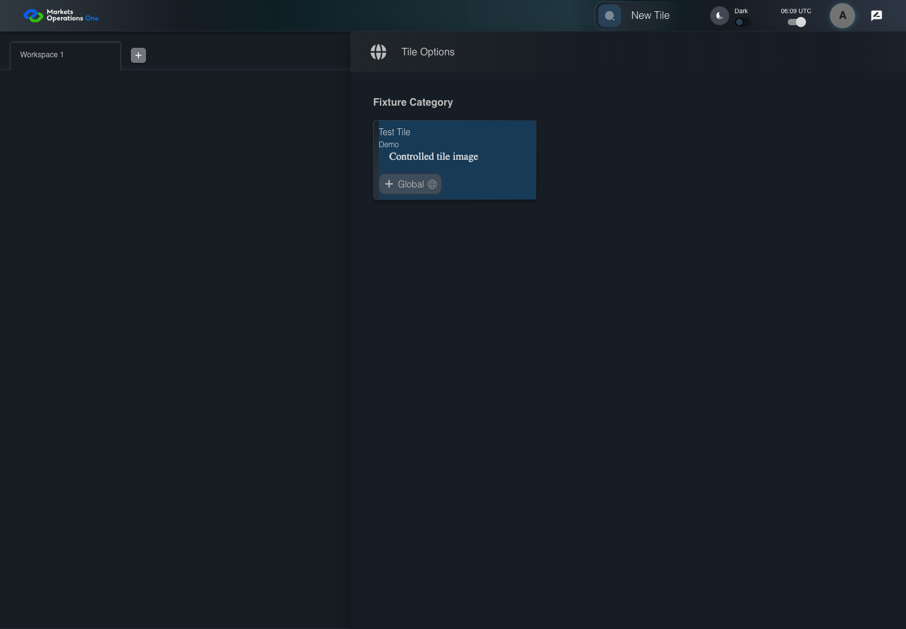

UI-MFE-009 open the internal Category module
PASS · application/run-050/ui-mfe-009-open-the-internal-category-module-ea38e020d58a-attempt-1 · ACTUAL_APPLICATION_LOCAL_SERVICES
Actual current React shell and internal admin modules. Controlled login, validation, activity renewal, UI-USER-01 entity roles, and empty administration endpoint responses. Controlled tenant component is used only for the disabled-default risk case. No BFF permission or business tenant acceptance.
2026-10-22T06:09:57.373Z to 2026-10-22T06:09:59.729Z
Assertions and result · Artifact manifest · Exact run inputs and source hashes
Result SHA-256:5a864658c40a6650c8ac2532b773b68dca6b7f6371f36e798525ccfcf9a91fe4Machine observations
- source-resolved-admin-target.json
c3161469989d0989628e4913e66ef57783360fb7be25cc4ae9116ef591590c28
Screenshot capture: CAPTURED. Named frames: 5.
Step screenshot bindings: COMPLETE. 4/4 canonical steps have execution screenshots.
Bindings measure structural coverage only. They do not establish screenshot content quality or relevance.
Screenshot content review: NOT_REVIEWED. Recorded context: 0/5 frames. Identical image bytes: 1 repeated frames. Recorded context does not establish human visual review.
Canonical step timeline
Given User A is authenticated as fixture UI-USER-01 with the case-specific permissions
Execution: PASSED.
1. step-01 Visible state after step 1: Given User A is authenticated as fixture UI-USER-01 with the case-specific permissions
2026-10-22T06:09:58.630Z · 1440×1000
Step: /Users/lushevol/code/github/ratan-release-impact/workbench/tasks/ui-test-coverage-20261022/test-cases.md:7150
SHA-256:f49e67fb7e0afa35c85c51b4b08c94b81d7bd0592f4373b690f43ff5083bcf53And an enabled admin tile uses @fm/base and module /category
Execution: PASSED.
2. step-02 Visible state after step 2: And an enabled admin tile uses @fm/base and module /category
2026-10-22T06:09:58.788Z · 1440×1000
Step: /Users/lushevol/code/github/ratan-release-impact/workbench/tasks/ui-test-coverage-20261022/test-cases.md:7151
SHA-256:3520e9efc122823a42337b2a4405fbb50f31411ef03256c912825d3fd75dc1f7When User A clicks section with source identity "UNVERIFIED admin tile title and subtitle" inside the fixture category inside the drawer titled "Tile Options"
Execution: PASSED.3. step-03 Visible state after step 3: When User A clicks section with source identity "UNVERIFIED admin tile title and subtitle" inside the fixture category inside the drawer titled "Tile Options"
2026-10-22T06:09:58.909Z · 1440×1000
Step: /Users/lushevol/code/github/ratan-release-impact/workbench/tasks/ui-test-coverage-20261022/test-cases.md:7152
SHA-256:21be864faf88f53ac60ced0c30cc8105fe8ae212f6a888efd7b66107feff6e02Then button named "Create New Category" inside the selected administration tabpanel is visible
Execution: PASSED.4. step-04 Visible state after step 4: Then button named "Create New Category" inside the selected administration tabpanel is visible
2026-10-22T06:09:59.385Z · 1440×1000
Step: /Users/lushevol/code/github/ratan-release-impact/workbench/tasks/ui-test-coverage-20261022/test-cases.md:7153
SHA-256:1640356455a66d773298b2fcb27cb70b9effd1c2d45506ee608170b825f77f64
Additional named frames

The final visible state after the named test assertions.
2026-10-22T06:09:59.481Z · 1440×1000Step: Test source: /Users/lushevol/code/github/ratan-release-impact/workbench/e2e/audit-specs/module-risk-expanded.spec.ts:13
SHA-256:
1640356455a66d773298b2fcb27cb70b9effd1c2d45506ee608170b825f77f64Image bytes match frame 4. An unchanged image can be valid for consecutive assertions. This match does not establish correct step content.
Screenshots establish visible state only. Assertions and traces support functional claims.